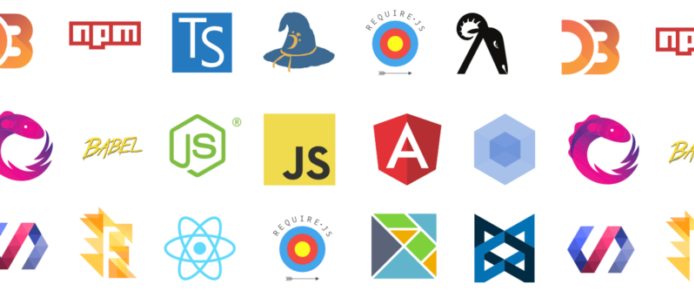

Bức tranh toàn cảnh JavaScript năm 2016
Bức tranh lập trình là một bức tranh muôn màu muôn vẻ, với sự thay đổi sôi động không bao giờ có dấu hiệu dừng. Đoạn hội thoại dí dởm dưới đây hy vọng sẽ thể thiện phần nào sự sôi nổi trong bức tranh đó, và giúp bạn nắm bắt được những “mô đen” mới nhất dạo gần đây.
Hey, tôi vừa nhận một web project mới, nhưng thật sự thì mấy năm gần đây tôi chưa đụng vào web nhiều lắm, và có vẻ như thị trường web đã có nhiều sự thay đổi rồi. Anh là một trong những web dev nổi danh nhất dạo gần đây đúng không nhỉ?
- Thuật ngữ chính xác là Front End engineer, và cậu tìm đến tôi là đúng người rồi đấy. Tôi làm đủ thứ về web năm 2016. Đồ họa hóa, chơi nhạc. chạy máy bay không người lái chơi đá banh được, đủ thứ trên đời hết. Tôi vừa mới tham dự JsConf và ReactConf, nên tôi biết rõ những công nghệ mới nhất đề làm ra ứng dụng web tốt nhất.
Tuyệt. Tôi cần tạo một trang web hiển thị những hoạt động mới nhất từ người dùng, nên tôi chỉ cần lấy dữ liệu từ REST endpoint và hiển thị theo dạng table lọc được, và cập nhật nếu có thay đổi trên server. Nếu tôi dùng jQuery để truy xuất và hiển thị dữ liệu thì sao nhỉ?
- Lạy chúa, đừng, chả ai dùng jQuery nữa đâu. Dùng thử React đi, năm 2016 rồi.
Ồ, vậy hả. React là cái gì vậy?
- Thư viện cực hay do mấy gã bên Facebook chế ra, với khả năng kiếm soát và hiệu năng rất cao đến ứng dụng, bằng cách cho phép cậu xử lý dễ dàng bất cứ view change nào.
Nghe hay đấy. Tôi dùng React để hiển thị dữ liệu từ server được không?
- Được chứ, nhưng trước hết cậu cần phải thêm React và React DOM làm thư viện trong webpage.
Khoan đã, đến hai thư viện luôn hả?
- Một cái là thư viện, còn cái kia là để điều khiển DOM, mà giờ ta cũng có thể mô tả DOM trong JSX được rồi.
JSX? JSX là cái gì vậy?
- JSX chỉ là một bộ cú pháp JavaScript mở rộng mà thôi, khá giống XML. Đây cũng là một cách mô tả DOM, cứ xem nó là phiên bản HTML tốt hơn đi.
HTML giờ sao rồi?
- Năm 2016 rồi đó. Chả ai code HTML trực tiếp nữa đâu.
À. Mà đúng rồi, nếu tôi thêm hai thư viện này rồi thì sẽ dùng được React đúng không?
- Chưa đâu. Còn phải thêm Babel nữa mới dùng được.
Một thư viện nữa à? Babel là cái gì?
- Babel là transpiler cho phép ta nhắm vào từng phiên bản cụ thể của JavaScript. Cậu không phải thêm Babel để sử dụng ReactJS, nhưng nếu không thêm vào, cậu sẽ buộc phải dùng ES5. Thành thật mà nói, năm 2016 rồi thì chuyên qua code bằng ES2016+ cho nó mô-đen.
ES5? ES2016+? Anh đang nói về cái gì vậy. ES5 với ES2016+ là sao?
- ES5 là viết tắt của ECMAScript5. Đây là phiên bản hầu hết mọi người nhắm vào kể từ khi được đa số trình duyệt tích hợp.
ECMAScript?
- Đúng rồi, như cậu biết đấy, đây là nền tảng cho chuẩn scripting JavaScript vào 1999, sau lần ra mắt ban đầu năm 1995, hồi đấy JavaScript có tên Livescript và chỉ chạy trên Netscape Navigator. Lúc đó vẫn còn rất lộn xộn, nhưng giờ mọi thứ đã cải thiện nhiều rồi, và ta có đến, khoảng tận 7 phiên bản.
Bảy phiên bản luôn à. Thật chứ. ES5 và ES2016+ là phiên bản thứ mấy vậy?
- Một cái là thứ 5, và cái kia là thứ 7.
Khoan đã, còn phiên bản thứ sáu thì sao?
- Ý cậu là ES6 hả? Mỗi phiên bản là phần rộng hơn của phiên bản trước, nên nếu cậu dùng ES2016+, cậu đã có tất cả các tính năng của những phiên bản trước đó rồi đấy.
Ồ. Vậy thì ES2016+ có gì hơn ES6 nhỉ?
- Nói chung cậu dùng ES6 cũng không sao. Nhưng với những tính năng hay như async và await, cậu cần phải dùng ES2016+ mới được. Còn không bạn sẽ phải kẹt với ES6 generator với coroutines giúp block asynchronous call, cho ta control flow phù hợp.
Tôi chả hiêu anh vừa nói cái mô tê gì cả, toàn những cái tên kỳ lạ thôi. Tôi vừa tải một đống dữ liệu từ server, hổi trước tôi chỉ việc thêm jQuery từ một CDN và chỉ lấy dữ liệu với AJAX call, giờ tôi làm vậy được không?
- Năm 2016 rồi ông tướng, ai mà xài jQuery nữa, cậu sẽ có một mớ code spaghetti trên tay đấy. Ai cũng biết hết.
Được rồi. Vậy thay vào đó, tôi sẽ tải ba thư viện để truy xuất dữ liệu và hiển thị HTML table.
- À, cậu có thể thêm ba thư viện này nhưng phải gói lại bằng module manager để chỉ load một file duy nhất.
Tôi hiểu rồi. module manager là gì thế?
- Cũng tùy môi trường nữa, nhưng với web, thì thường để chi bất cứ thứ gì hỗ trợ AMD hoặc CommonJS module thông thường.
Àaaaa. Và AMD và CommonJS là…?
- Có nhiều cách mô tả cách tương tác giữa nhiều thư viện và class JavaScript. Cậu biết đấy, export và require? Cậu có thể viết nhiều file JavaScript xác định AMD hoặc CommonJS và bạn có thể dùng các công cụ như Browserify để gói lại.
OK, nghe hợp lý đấy. Browserify là gì?
- Đây là công cụ cho phép cậu gói dependencies được mô tả CommonJS với các file có thể chạy trong trình duyệt. Công cụ này ra đời vì đa số mọi người xuất những dependencies này trong npm registry.
Npm registry?
- Đây là một public repo rất lớn, nơi các chuyên gia bỏ code và dependencies thành module vào đây.
Như CDN vậy hả?
- Không hẳn. Giống như database tập trung hơn, tại đây mọi người có thể publish và download thư viện, cậu có thể sử dụng chúng để lập trình cục bộ hoặc upload lên CDN nếu muốn.
Ồ, vậy là giống Bower rồi!
- Đúng vậy, nhưng năm 2016 rồi, ai dùng Bower nữa.
À, vậy… tôi phải download thư viện npm từ npm đúng không?
- Đúng rồi. Ví dụ, nếu bạn muốn dùng React, bạn phải download React module và import vào code. Bạn có thể làm tương tự với hầu hết các thư viện JavaScript phổ biến.
Ồ, giống Angular!
- Angular là từ 2015 rồi. Nhưng cũng tạm được. Angular, rồi VueJS hay RxJS và những thư viện 2016 hay ho khác. Cậu muốn nghe thêm về các thư viện này không?
Thôi mình quay lại React đi, tôi cũng học nhiều quá rồi. Vậy, nếu tôi cần dùng React, tôi phải truy xuất từ npm này vè sau đó cùng cái Browerify đúng không?
- Chính xác.
Gói một đống dependencies lại với nhau, sao phức tạo quá vậy?
- Tất nhiên là phức tạp rồi. Đó là lý do tại sao ta phải dùng thêm task manager như Grunt hay Gulp hay Broccoli để chạy tự động Browertify. Bằng không, cậu xài Mimosa cũng được.
Grunt? Gulp? Broccoli? Mimosa? Anh đang nói cái giống gì vậy?
- Task managers. Nhưng bọn này hết thời rồi, năm 2015 thì còn tạm được, rồi thì chúng tôi chuyển sang Makefiles, nhưng giờ tất tần tật đền dùng Webpack.
Makefiles? Tôi nhớ cái này dùng chủ yếu trong mấy project C với C++ mà?
- Không sai. Nhưng thực ra trong web chúng tôi thích phức tạp hóa hơn là quay lại cơ bản. Cứ vài năm là chúng tôi “quậy” một lần, cứ chờ mà xem, chúng tôi sắp sửa lấu assembly làm web liên ngay đây.
*Thở dài*. Anh có nhắc tới Webpack đúng không?
- Đây là một module manager nữa cho trình duyệt, còn làm được task runner nữa. Giống Browserify, nhưng tốt hơn.
Oh, Ok. Tốt hơn chỗ nào ý nhỉ?
- À, không thể nói là tốt hơn hoàn toàn, cái này dựa trên chủ quan nhiều hơn, tùy cậu thích gói dependencies như thế nào. Weback cho phép bạn sử dụng nhiều module manager khác nhày, mà không chỉ mấy cái CommonJS không thôi, như native ES6 cũng có hỗ trợ module nữa.
Mớ CommonJS/ES6 này làm tôi chóng mặt quá.
- Ai cũng vậy thôi, nhưng cậu đừng nên quan tâm về SystemJS nữa.
Lạy chúa. Thêm một ông -js nữa. Được rồi, vậy thì SystemJS là gì?
- À, không giống Browserify và Webpack 1.x, SystemJS là một dynamic module loader cho phép cậu gói nhiều module trong nhiều file thay vì gói lại thành một file lớn.
Khoan đã, nhưng tôi tưởng ta đang muốn build thư viện trong một file lớn và load file đó!
- Đúng, nhưng vì sự xuất hiện của HTTP/2 trong tương lai, nhiều HTTP request vẫn tốt hơn.
Đợi nào, vậy thì ta không thể chỉ thêm ba thư viện trên để dùng được React đúng không??
- Không hoàn toàn như vậy. Ý tôi là, cậu có thể thêm chúng dưới dạng external script từ một CDN, nhưng bạn sẽ vẫn phải thêm cả Babel nữa.
*Thở dài*. Lại thêm một mớ công đoạn nữa đúng không?
- Chứ còn gì nữa, bạn sẽ phải bao hết toàn bộ babel-core, mà vẫn chưa tối ưu cho production. Trong production, bạn cần phải thực hiện một loạt pre-task siêu rối rắm để chuẩn bị cho project. Bạn cần phải giảm thiểu asset, làm xấu chúng đi, inline css trên fold, defer scripts, rồi còn….
Được rồi, được rồi. Nên nếu tôi muốn thêm thư viện trực tiếp trong CDN, tôi sẽ làm thế nào đây?
- Tôi sẽ transpile nó từ Typescript bằng combo Webpack + SystemJS + Babel.
Typrescript? Tôi tưởng mình đang code bằng JavaScript cơ mà!
- Typescript cũng là JavaScript, hoặc rõ hơn, là superset của JavaScript, hoặc JavaScript đặc biệt trên phiên bản ES6. Cậu biết rồi đó, sáu phiên bản hồi nãy tôi mới nói đó?
Tôi thưởng ES2016+ đã là superset của ES6 rồi mà! TẠI SAO giờ lại cần thêm cái Typescript này nữa?
- À, vì nó cho phép chúng ta sử dụng JavaScript làm typed language, và giảm run-time errors. Năm 2016 rồi, cậu nên thêm một số types vào JavaScript code của mình đi.
Và hiển nhiên là Typescrip làm được điều đó rồi.
- Flow cũng được, dù nó chỉ kiểm soát typing, trong khi Typescript lại là superset của JavaScript và cần phải được compile.
*Thở dài*… Còn Flow là?
- Type checker tĩnh do gã nào đó ở Facebook chế ra, được viết trên nền OCaml, vì lập trình hàm là đỉnh nhất.
OcCaml? Lập trình hàm?
- Cậu chả biết gì cả, mô đen mới 2016 cả đấy, Lập trình hàm, Hàm cấp cao, currying, Pure function,…
Tôi chả hiểu anh vừa nói cái quỷ gì cả.
- Mới đầu chả ai hiểu đâu. Nghe này, cậu chỉ cần biết rằng, lập trình hàm tốt hơn cả ÔP và đó là thứ ta nên dùng ở năm 2016 này.
Khoan đã, tôi từng học OOP ở trường, OOP dùng tốt lắm mà?
- Java hồi mới được Oracle mua lại cũng tốt thôi. Ý tôi là, hồi đó OOP vẫn còn tốt, và vẫn có chỗ đứng ngày nay, nhưng giờ đây mọi người đang nhận ra rằng modifying states dùng khá khó chịu.. nên đã chuyển sang immutable object với lập trình hàm hết cả rồi. Và may mắn hơn nữa là web giờ có thêm nhiều thư viện như Ramda cho phép chúng ta lập trình hàm trong JavaScript thuần.
Cái gì đủ thứ tên tây tàu vậy? Còn Ramnda là gì nữa?
- Không phải. Ramda. Như Lambda ấy. Cái thư viện của ông David Chamber đấy cậu biết chứ?
David nào cơ?
- David Chambers. Giỏi lắm. Một trong những người có đóng gớp lớn cho Ramda. Cậu cũng nên tìm hiểu thử Erik Meijer nếu cậu thực sự muốn học lập trình hàm.
Và Erick Meijer là…?
- Cũng một gã trong lập trình hàm nữa. Gã này đi diễn thuyết cả chục lần rồi, ổng hay mặc ba cái áo màu mè, rồi bash Agile quá trời. Mấy gã Tj, Jash Kenas, Sindre Sorhus, Paul Irish, Addy Osmani cũng giỏi lắm đấy-
Từ từ đã nào. Chỉ truy xuất và hiển thị dữ liệu thôi mà khó khăn vậy à. Tôi khá chắc là chỉ tạo table với dynamic data. Hãy quay lại React nào. Tồi lấy dữ liệu từ server với React thế nào đây?
- À, cậu thực ra không truy xuất dữ liệu bằng React đâu, React chỉ hiển thị được dữ liệu thôi.
Oh, chết tôi rồi. Vậy anh sẽ làm gì để truy xuất dữ liệu?
- Cậu nên dùng Fetch?
Fetch là gì nữa? Đặt tên gì kỳ quá vậy?
- Nghe kỳ đúng không? Fetch là tên của native implementation dùng để thực hiện XMLHttpRequests với server.
Ồ, vậy AJAX?
- AJAX chỉ là công dụng của XMLHttpRequest thôi. Nhưng tất nhiên rồi, Fetch cho phép cậu thực hiện AJAX nằm trong promise, sau này cậu có thể phân tách promise ra để tránh địa ngục callback.
Địa ngục callback?
- Đúng vậy. Mỗi khi cậu thực hiện request không đồng bộ với server, cậu cần phải chờ phản hồi của server, khiến cậu phải thêm hàm lồng vào hàm, gọi là “kim tự tháp callback” từ địa ngục.
Oh, OK. Và thứ “promise” này giải quyết được vấn đề này đúng không?
- Đúng rồi. Bằng cách điền khiển callback thông qua promise, cậu có thể viết code dễ dàng hơn, dễ hiểu hơn, dễ mock và test hơn, đồng thời còn thực hiện được các request song song cùng một lúc và đợi cho đến khi tất cả đã load xong.
Và Fetch làm được hết đúng không?
- Chuẩn rồi đấy. Nhưng chỉ khi người dùng của cậu dùng trình duyệt mới nhất thôi, bằng không cậu vẫn phải thêm Fetch polyfill hoặc dùng Request, Bluebird hay Axios.
Lạy chúa, tôi phải biết bao nhiêu thứ thư viện đây chứ? Bao nhiêu đây?
- JavaScipt mà. Có cả nghìn thư viện làm những thứ giống nhau. Chúng tôi biết rõ về thư viện, thực ra, chúng tôi dùng những thư viện tốt nhất. Mấy thư viện này siêu lớn, và đôi khi chúng tôi thêm cả hình của Guy Fieri trong đó nữa.
Anh vừa mới nhắc Guy Fiery đúng không? Xử hết luôn đi. Mấy thứ viện Bluebird, Request, Axios gì đấy có thể làm được gì?
- Chúng là các thư viện thực hiện XMLHttpRequests trả kết quả là promise.
Không phải là phương thức AJAX của jQuert cũng bắt đầu trả promise rồi à?
- Năm 2016 rồi, bỏ mấy cái chữ “j” đi. Cứ việc dùng Fetch, và polyfill nó khi không trong trình duyệt, còn không thì cứ dùng Bluebird, Request, hoặc Axios. Rồi thì quản lý promise với await trong hàm async, và bùm chéo, cậu đã có trong tay control flow phù hợp rồi đấy.
Anh nhắc await chắc cũng ba lần rồi nhưng tôi chả biết nó là gì cả.
- Await cho phép cậu block asynchronous call, từ đó cậu có thể quản lý thời gian truy xuất dữ liệu tốt hơn, đồng thời làm code dễ đọc hơn nữa. Hay tuyệt cú mèo luôn đấy, cậu chỉ phải đản bảo được là đã thêm stage-3 preset trong Babel, hoặc dùng plugin syntax-async-functions và transform-async-to-generator.
Chắc tôi điên mất rồi.
- Không, chưa điên đâu. Tới lúc phải precompile Typescript code và transpile bằng Babel để dùng await mới điên kìa.
Ế? Trong Typescript không có sẵn hả?
- Phiên bản kế tiếp thì có, nhưng 1.7 chỉ nhắm vào ES6 thôi, vậy nên nếu muốn dùng await trong trình duyệt, trước hết cậu phải compile Typescript code nhắm vào ES6, và sau đó tới Babel thì mới ổn.
Cạn lời.
- Trời ơi, dễ như ăn cháo ý mà. Code hết bằng Typescript. Tất cả module sử dụng Fetch compile để nhắm vào ES6, transpile chúng với Babel trên stage-3 cài sẵn, và load bằng SystemJS. Nếu cậu không có Fetch, polyfill, hoặc dùng Bluebird, Request hay Axios, và xử lý tất cả promise với await.
Có vẻ nhưng hai người chúng ta có quan niệm về “dễ” rất khác nhau thì phải. Vậy thì, làm xong “nghi thức” trên thì tôi đã truy xuất được data và có thể hiển thị bằng React rồi đúng không?
- Ứng dụng của cậu có định xử lý state change không?
Err, chắc không đâu. Tôi chỉ cần hiển thị dữ liệu là được rồi.
- Oh, ơn giời. Bằng không tôi lại phải giải thích đến Flux, rồi các implementation như Flummox, Alt, Fluxible. Dù thật sự thì cậu nên dùng Redux vẫn hơn.
Tôi sẽ giả bộ chưa bao giờ nghe đến mấy cái tên đó. Quay lại vấn đề, Tôi chỉ cần hiển thị dữ liệu thôi.
- Ồ, nếu cậu chỉ cần hiển thị dữ liệu thì ngay từ đầu đã không cần đến React nữa rồi. Cậu chỉ cần templating engine.
Anh giỡn hay thiệt vậy? Bộ chọc tôi vui lắm hả? Đây là cách anh đổi xử với những người anh yêu thương ư?
- Tôi chỉ giải thích những công cụ cậu có thể dùng được thôi mà.
Ngưng! Anh dừng lại cái đi!
- Ý tôi là, ngay cả khi chỉ dùng đến templating engine, tôi sẽ vẫn phải nhờ đến combo Typescript + SystemJS + Babel nếu tôi là cậu đấy.
Tôi cần hiển thị dữ liệu lên page, chứ phải hái trăng sao trên trời đâu. Anh chỉ cần cho tôi biết phải dùng templating engine nào thôi, còn lại tôi tự lo.
- Nhiều lắm nha, cậu quen dùng cái nào?
Ugh, tôi chả nhớ tên nữa, lâu lắm rồi chưa động đến.
- jTemplates? jQote? PURE?
Err, chịu, chả rõ. Có cái nào khác không?
- Transparency? JSRender? MarkupJS? KnockoutJS? Cái này có two-way binding.
Còn nữa không?
- PlatesJS? jQuery-tmpl? Handlebars? vẫn có người dùng đấy.
Chắc vậy. Có cái nào tương tự như cái cuối anh vừa nhắc không?
- Mustache, underscore? Tôi nghĩ đến giờ lodash cũng có hay sao ấy, nhưng mấy cái này từ hồi 2014 cả rồi.
Err… hình như là mới hơn thì phải.
- Jade? DustJS?
Không.
- DotJS? EJS?
Không.
- Nunjucks? ECT?
Không.
- Mah, dù gì thì chả thích ai thích dùng Coffeescript nữa. Jade thì sao?
Không, anh vừa mới nhắc Jade đúng không?
- Pug… à mà Jade. Đúng rồi, Jade giờ đổi tên thành Pug rồi.
*Thở dài* Chịu, chả nhớ được. Thế anh dùng cái nào?
- Chắc là chỉ có ES6 native template strings thôi.
Để tôi đoán xem. Cái đó có cần thêm ES6 nữa chứ gì.
- Chuẩn rồi.
Và dựa trên trình duyệt tôi đang dùng, phải cần thêm Babel chứ gì.
- Đúng luôn.
Và nếu tôi muốn tích hợp mà không phải thêm cả một thư viện lõi, tôi cần phải load dưới dạng module từ npm nữa ha.
- Không sai.
Rồi phải cần thêm Browserify, hoặc Webpack, hay chắc là cái SystemJS gì gì đó phải không?
- Sau cậu biết hay quá vậy.
Nếu không dùng Webpack, thì phải quản lý bằng task runner mới lý tưởng?
- Lại đúng nữa.
Nhưng vì tôi nên dùng lập trình hàm và typed languages nên tôi trước hết cần phải pre-compile Typescript hoặc thêm thứ Flow này.
- Cậu đang dần thuộc bài rồi đấy.
Và rồi gửi mớ đó đến Babel nếu tôi muốn dùng await.
- Điểm 10 cho chất lượng.
Vậy sau đó tôi có thể dùng được Fetch, promise, và control flow và tất cả phép màu của chúng.
- À đừng quên polyfill Fetch nếu không có hỗ trợ nhá, Safari vẫn chưa tự xử lý được đâu.
Hiểu rồi, chắc buổi nói chuyện đến đây là hết được rồi. Mà, anh biết gì không, tôi cũng chấm hết luôn, hết làm web, hết JavaScript gì gì đấy luôn.
- Tốt thôi, vài năm nữa người ta lại chuyển sang code bằng Elm hay WebAssembly chứ gì.
Tôi quyết định chia tay backend luôn rồi. Thay đổi, rồi version mới, rồi phiên bản mới, rồi compiler với transpiler gì mà quá chừng nhiều. Cộng đồng JavaScript đều là mấy gã điên khùng nếu cứ quay mòng mòng liên tục thế này.
- Vậy tôi đã hiểu ý cậu rồi. Thế thì cậu nên thử nhảy vào cộng đồng Python xem.
Sao vậy?
- Có nghe về Python 3 chưa?
…